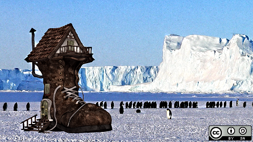

Get the highlights in your inbox every week.
An introduction to the Linux boot and startup processes
An introduction to the Linux boot and startup processes
Ever wondered what it takes to get your system ready to run applications? Here's what is going on under the hood.

Image by :
Penguin, Boot. Modified by Opensource.com. CC BY-SA 4.0.
Understanding the Linux boot and startup processes is important to being able to both configure Linux and to resolving startup issues. This article presents an overview of the bootup sequence using the GRUB2 bootloader and the startup sequence as performed by the systemd initialization system.
In reality, there are two sequences of events that are required to boot a Linux computer and make it usable: boot and startup. The boot sequence starts when the computer is turned on, and is completed when the kernel is initialized and systemd is launched. The startup process then takes over and finishes the task of getting the Linux computer into an operational state.
Overall, the Linux boot and startup process is fairly simple to understand. It is comprised of the following steps which will be described in more detail in the following sections.
- BIOS POST
- Boot loader (GRUB2)
- Kernel initialization
- Start systemd, the parent of all processes.
Note that this article covers GRUB2 and systemd because they are the current boot loader and initialization software for most major distributions. Other software options have been used historically and are still found in some distributions.
The boot process
The boot process can be initiated in one of a couple ways. First, if power is turned off, turning on the power will begin the boot process. If the computer is already running a local user, including root or an unprivileged user, the user can programmatically initiate the boot sequence by using the GUI or command line to initiate a reboot. A reboot will first do a shutdown and then restart the computer.
BIOS POST
The first step of the Linux boot process really has nothing whatever to do with Linux. This is the hardware portion of the boot process and is the same for any operating system. When power is first applied to the computer it runs the POST (Power On Self Test) which is part of the BIOS (Basic I/O System).
When IBM designed the first PC back in 1981, BIOS was designed to initialize the hardware components. POST is the part of BIOS whose task is to ensure that the computer hardware functioned correctly. If POST fails, the computer may not be usable and so the boot process does not continue.
BIOS POST checks the basic operability of the hardware and then it issues a BIOS interrupt, INT 13H, which locates the boot sectors on any attached bootable devices. The first boot sector it finds that contains a valid boot record is loaded into RAM and control is then transferred to the code that was loaded from the boot sector.
The boot sector is really the first stage of the boot loader. There are three boot loaders used by most Linux distributions, GRUB, GRUB2, and LILO. GRUB2 is the newest and is used much more frequently these days than the other older options.
GRUB2
GRUB2 stands for "GRand Unified Bootloader, version 2" and it is now the primary bootloader for most current Linux distributions. GRUB2 is the program which makes the computer just smart enough to find the operating system kernel and load it into memory. Because it is easier to write and say GRUB than GRUB2, I may use the term GRUB in this document but I will be referring to GRUB2 unless specified otherwise.
GRUB has been designed to be compatible with the multiboot specification which allows GRUB to boot many versions of Linux and other free operating systems; it can also chain load the boot record of proprietary operating systems.
GRUB can also allow the user to choose to boot from among several different kernels for any given Linux distribution. This affords the ability to boot to a previous kernel version if an updated one fails somehow or is incompatible with an important piece of software. GRUB can be configured using the /boot/grub/grub.conf file.
GRUB1 is now considered to be legacy and has been replaced in most modern distributions with GRUB2, which is a rewrite of GRUB1. Red Hat based distros upgraded to GRUB2 around Fedora 15 and CentOS/RHEL 7. GRUB2 provides the same boot functionality as GRUB1 but GRUB2 is also a mainframe-like command-based pre-OS environment and allows more flexibility during the pre-boot phase. GRUB2 is configured with /boot/grub2/grub.cfg.
The primary function of either GRUB is to get the Linux kernel loaded into memory and running. Both versions of GRUB work essentially the same way and have the same three stages, but I will use GRUB2 for this discussion of how GRUB does its job. The configuration of GRUB or GRUB2 and the use of GRUB2 commands is outside the scope of this article.
Although GRUB2 does not officially use the stage notation for the three stages of GRUB2, it is convenient to refer to them in that way, so I will in this article.
Stage 1
As mentioned in the BIOS POST section, at the end of POST, BIOS searches the attached disks for a boot record, usually located in the Master Boot Record (MBR), it loads the first one it finds into memory and then starts execution of the boot record. The bootstrap code, i.e., GRUB2 stage 1, is very small because it must fit into the first 512-byte sector on the hard drive along with the partition table. The total amount of space allocated for the actual bootstrap code in a classic generic MBR is 446 bytes. The 446 Byte file for stage 1 is named boot.img and does not contain the partition table which is added to the boot record separately.
Because the boot record must be so small, it is also not very smart and does not understand filesystem structures. Therefore the sole purpose of stage 1 is to locate and load stage 1.5. In order to accomplish this, stage 1.5 of GRUB must be located in the space between the boot record itself and the first partition on the drive. After loading GRUB stage 1.5 into RAM, stage 1 turns control over to stage 1.5.
Stage 1.5
As mentioned above, stage 1.5 of GRUB must be located in the space between the boot record itself and the first partition on the disk drive. This space was left unused historically for technical reasons. The first partition on the hard drive begins at sector 63 and with the MBR in sector 0, that leaves 62 512-byte sectors—31,744 bytes—in which to store the core.img file which is stage 1.5 of GRUB. The core.img file is 25,389 Bytes so there is plenty of space available between the MBR and the first disk partition in which to store it.
Because of the larger amount of code that can be accommodated for stage 1.5, it can have enough code to contain a few common filesystem drivers, such as the standard EXT and other Linux filesystems, FAT, and NTFS. The GRUB2 core.img is much more complex and capable than the older GRUB1 stage 1.5. This means that stage 2 of GRUB2 can be located on a standard EXT filesystem but it cannot be located on a logical volume. So the standard location for the stage 2 files is in the /boot filesystem, specifically /boot/grub2.
Note that the /boot directory must be located on a filesystem that is supported by GRUB. Not all filesystems are. The function of stage 1.5 is to begin execution with the filesystem drivers necessary to locate the stage 2 files in the /boot filesystem and load the needed drivers.
Stage 2
All of the files for GRUB stage 2 are located in the /boot/grub2 directory and several subdirectories. GRUB2 does not have an image file like stages 1 and 2. Instead, it consists mostly of runtime kernel modules that are loaded as needed from the /boot/grub2/i386-pc directory.
The function of GRUB2 stage 2 is to locate and load a Linux kernel into RAM and turn control of the computer over to the kernel. The kernel and its associated files are located in the /boot directory. The kernel files are identifiable as they are all named starting with vmlinuz. You can list the contents of the /boot directory to see the currently installed kernels on your system.
GRUB2, like GRUB1, supports booting from one of a selection of Linux kernels. The Red Hat package manager, DNF, supports keeping multiple versions of the kernel so that if a problem occurs with the newest one, an older version of the kernel can be booted. By default, GRUB provides a pre-boot menu of the installed kernels, including a rescue option and, if configured, a recovery option.
Stage 2 of GRUB2 loads the selected kernel into memory and turns control of the computer over to the kernel.
Kernel
All of the kernels are in a self-extracting, compressed format to save space. The kernels are located in the /boot directory, along with an initial RAM disk image, and device maps of the hard drives.
After the selected kernel is loaded into memory and begins executing, it must first extract itself from the compressed version of the file before it can perform any useful work. Once the kernel has extracted itself, it loads systemd, which is the replacement for the old SysV init program, and turns control over to it.
This is the end of the boot process. At this point, the Linux kernel and systemd are running but unable to perform any productive tasks for the end user because nothing else is running.
The startup process
The startup process follows the boot process and brings the Linux computer up to an operational state in which it is usable for productive work.
systemd
systemd is the mother of all processes and it is responsible for bringing the Linux host up to a state in which productive work can be done. Some of its functions, which are far more extensive than the old init program, are to manage many aspects of a running Linux host, including mounting filesystems, and starting and managing system services required to have a productive Linux host. Any of systemd's tasks that are not related to the startup sequence are outside the scope of this article.
First, systemd mounts the filesystems as defined by /etc/fstab, including any swap files or partitions. At this point, it can access the configuration files located in /etc, including its own. It uses its configuration file, /etc/systemd/system/default.target, to determine which state or target, into which it should boot the host. The default.target file is only a symbolic link to the true target file. For a desktop workstation, this is typically going to be the graphical.target, which is equivalent to runlevel 5 in the old SystemV init. For a server, the default is more likely to be the multi-user.target which is like runlevel 3 in SystemV. The emergency.target is similar to single user mode.
Note that targets and services are systemd units.
Table 1, below, is a comparison of the systemd targets with the old SystemV startup runlevels. The systemd target aliases are provided by systemd for backward compatibility. The target aliases allow scripts—and many sysadmins like myself—to use SystemV commands like init 3 to change runlevels. Of course, the SystemV commands are forwarded to systemd for interpretation and execution.
| SystemV Runlevel | systemd target | systemd target aliases | Description |
| halt.target | Halts the system without powering it down. | ||
| 0 | poweroff.target | runlevel0.target | Halts the system and turns the power off. |
| S | emergency.target | Single user mode. No services are running; filesystems are not mounted. This is the most basic level of operation with only an emergency shell running on the main console for the user to interact with the system. | |
| 1 | rescue.target | runlevel1.target | A base system including mounting the filesystems with only the most basic services running and a rescue shell on the main console. |
| 2 | runlevel2.target | Multiuser, without NFS but all other non-GUI services running. | |
| 3 | multi-user.target | runlevel3.target | All services running but command line interface (CLI) only. |
| 4 | runlevel4.target | Unused. | |
| 5 | graphical.target | runlevel5.target | multi-user with a GUI. |
| 6 | reboot.target | runlevel6.target | Reboot |
| default.target | This target is always aliased with a symbolic link to either multi-user.target or graphical.target. systemd always uses the default.target to start the system. The default.target should never be aliased to halt.target, poweroff.target, or reboot.target. |
Table 1: Comparison of SystemV runlevels with systemd targets and some target aliases.
Each target has a set of dependencies described in its configuration file. systemd starts the required dependencies. These dependencies are the services required to run the Linux host at a specific level of functionality. When all of the dependencies listed in the target configuration files are loaded and running, the system is running at that target level.
systemd also looks at the legacy SystemV init directories to see if any startup files exist there. If so, systemd used those as configuration files to start the services described by the files. The deprecated network service is a good example of one of those that still use SystemV startup files in Fedora.
Figure 1, below, is copied directly from the bootup man page. It shows the general sequence of events during systemd startup and the basic ordering requirements to ensure a successful startup.
The sysinit.target and basic.target targets can be considered as checkpoints in the startup process. Although systemd has as one of its design goals to start system services in parallel, there are still certain services and functional targets that must be started before other services and targets can be started. These checkpoints cannot be passed until all of the services and targets required by that checkpoint are fulfilled.
So the sysinit.target is reached when all of the units on which it depends are completed. All of those units, mounting filesystems, setting up swap files, starting udev, setting the random generator seed, initiating low-level services, and setting up cryptographic services if one or more filesystems are encrypted, must be completed, but within the sysinit.target those tasks can be performed in parallel.
The sysinit.target starts up all of the low-level services and units required for the system to be marginally functional and that are required to enable moving on to the basic.target.
local-fs-pre.target
|
v
(various mounts and (various swap (various cryptsetup
fsck services...) devices...) devices...) (various low-level (various low-level
| | | services: udevd, API VFS mounts:
v v v tmpfiles, random mqueue, configfs,
local-fs.target swap.target cryptsetup.target seed, sysctl, ...) debugfs, ...)
| | | | |
\__________________|_________________ | ___________________|____________________/
\|/
v
sysinit.target
|
____________________________________/|\________________________________________
/ | | | \
| | | | |
v v | v v
(various (various | (various rescue.service
timers...) paths...) | sockets...) |
| | | | v
v v | v rescue.target
timers.target paths.target | sockets.target
| | | |
v \_________________ | ___________________/
\|/
v
basic.target
|
____________________________________/| emergency.service
/ | | |
| | | v
v v v emergency.target
display- (various system (various system
manager.service services services)
| required for |
| graphical UIs) v
| | multi-user.target
| | |
\_________________ | _________________/
\|/
v
graphical.target
Figure 1: The systemd startup map.
After the sysinit.target is fulfilled, systemd next starts the basic.target, starting all of the units required to fulfill it. The basic target provides some additional functionality by starting units that re required for the next target. These include setting up things like paths to various executable directories, communication sockets, and timers.
Finally, the user-level targets, multi-user.target or graphical.target can be initialized. Notice that the multi-user.target must be reached before the graphical target dependencies can be met.
The underlined targets in Figure 1, are the usual startup targets. When one of these targets is reached, then startup has completed. If the multi-user.target is the default, then you should see a text mode login on the console. If graphical.target is the default, then you should see a graphical login; the specific GUI login screen you see will depend on the default display manager you use.
Issues
I recently had a need to change the default boot kernel on a Linux computer that used GRUB2. I found that some of the commands did not seem to work properly for me, or that I was not using them correctly. I am not yet certain which was the case, and need to do some more research.
The grub2-set-default command did not properly set the default kernel index for me in the /etc/default/grub file so that the desired alternate kernel did not boot. So I manually changed /etc/default/grub GRUB_DEFAULT=saved to GRUB_DEFAULT=2 where 2 is the index of the installed kernel I wanted to boot. Then I ran the command grub2-mkconfig > /boot/grub2/grub.cfg to create the new grub configuration file. This circumvention worked as expected and booted to the alternate kernel.
Conclusions
GRUB2 and the systemd init system are the key components in the boot and startup phases of most modern Linux distributions. Despite the fact that there has been controversy surrounding systemd especially, these two components work together smoothly to first load the kernel and then to start up all of the system services required to produce a functional Linux system.
Although I do find both GRUB2 and systemd more complex than their predecessors, they are also just as easy to learn and manage. The man pages have a great deal of information about systemd, and freedesktop.org has the complete set of systemd man pages online. Refer to the resources, below, for more links.
Additional resources
- GNU GRUB (Wikipedia)
- GNU GRUB Manual (GNU.org)
- Master Boot Record (Wikipedia)
- Multiboot specification (Wikipedia)
- systemd (Wikipedia)
- systemd bootup process (Freedesktop.org)
- systemd index of man pages (Freedesktop.org)
About the author

Recommended reading


10 Comments, Register or Log in to post a comment.
Thank you so much for that article on Linux booting! I wanted to find such a resource for a long time.
Something I miss from the past is the old stream of listing boot operations. I guess maybe this was too scary for some, so we have to have this graphical boot that tells us nothing.
That can be fixed. Edit /etc/default/grub and remove "rhgb" and "quiet" from the kernel parameters line. Then run the command:
grub2-mkconfig > /boot/grub2/grub.cfg
That command creates a new grub.cfg using the revised kernel parameters, so you should now see all of the interesting information available during startup.
I find this information extremely useful due to potential for issues and downright crashes during boot. I can tell a lot by watching that information flow by and it sounds like you can, too.
Enjoy!
I always have to take a deep breath when I mess with the boot process, it's such a PITA when you have an unbootable system.
Anyway, I found I needed to be actual root and not sudo to run this command (I think because of the permissions of the file), and what I really needed to do was (on F24):
grub2-mkconfig > /boot/grub2/grub.cfg
since this is where grub.cfg actually is.
You are correct. I typed the incorrect path. I have fixed the typo. Thanks for pointing that out.
I was going to add that, on a practical level, I have found that the boot messages more often alert you to something that doesn't prevent booting, but may affect some service you need afterward, and gives you a heads up about some failure.
Very timely article for me as I had to dig into all this just yesterday!
Thank you so much for this article, it is great.
Seems strange to talk of mbr and bios in 2017, had hoped that you would cover gpt and uefi.
Thank you for the fine summary of the boot and startup process. Consider an update to explain which distros are likely to follow the scheme that you describe. For example, I could not 'find' any *.target files on my Linux Mint 17.3 workstation although 'systemd' is used in the boot+startup process.